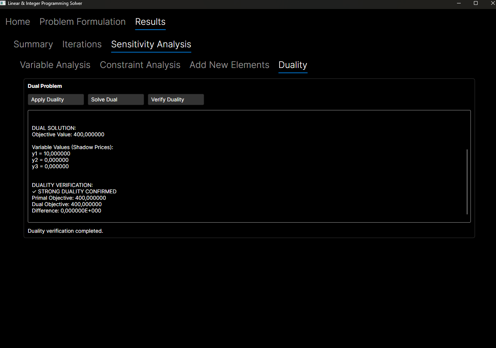
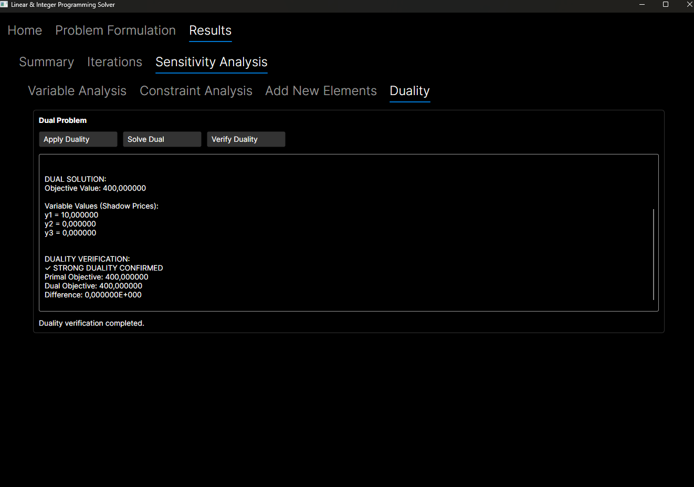

Linear Programming Solver
University Group Project
LPR381 - Linear Programming
F-Sharp
C-Sharp
Project Overview
This is a sophisticated mathematical optimization tool that implements multiple linear programming
algorithms in a modern cross-platform desktop application. The project demonstrates advanced
software engineering principles by combining functional programming (F#) for mathematical
computations with object-oriented design (C#) for the user interface.
The application provides a complete workflow from problem formulation through solution analysis,
supporting both manual input and file-based problem definitions. It implements classical
optimization algorithms including Simplex methods, Branch & Bound for integer programming, and
specialized algorithms like the Knapsack solver.]
Key Features
- Problem Input & Formulation
- Advanced Analysis Tools
- Visualization & Output
Algorithm Implementation
- Primal Simplex Method
- Revised Simplex Method
- Dual Simplex Method
- Branch & Bound
- Cutting Plane Method
- Knapsack Solver
Technical Implementation
The project uses a hybrid F#/C# architecture where F# handles mathematical computations through
immutable data structures and functional algorithms, while C# manages the Avalonia UI layer. Core
algorithms implement a generic ITree
MathNet.Numerics provides efficient matrix
operations, while a dedicated interop layer handles F# union types and option conversions for
seamless language integration. The sensitivity analysis engine caches basis contexts for
real-time parameter range calculations, and a solver registry pattern enables dynamic algorithm
selection. Automatic formulation conversion between standard, canonical, and dual forms
preserves mathematical integrity throughout the solution process.
Additional Features
- Sensitivity Analysis Engine
- Duality Framework
- File Format Support
- Cross-Platform Compatibility
 
